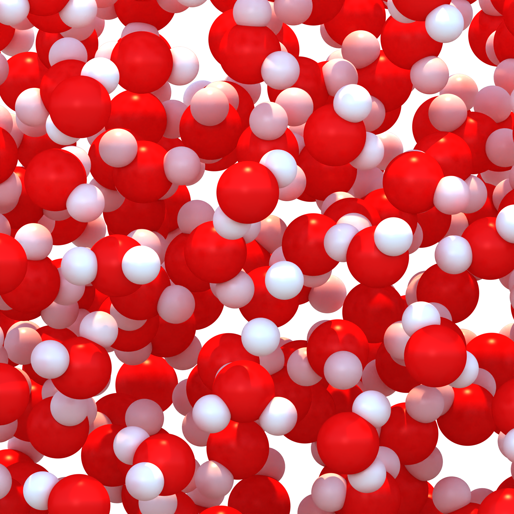

Journal Club
Machine Learning in Chemical Physics @ Princeton
Seasonal deep-dives into how molecular simulations, experiments, theory, and machine learning enable new discoveries in chemistry and physics. Open to all! Feel free to join, use our resources, or present work you're excited about. For talks--I (Jacob) am a strong believer in the power of free food, as such we will always look to provide some sort of snack for the in-person sessions. We will also hold online sessions in conjunction so anyone, anywhere can join in on the discussions!

A render of a simulation of bulk water simulated with the UMA foundation machine learned potential, run on Princeton's cluster, allowing us to access DFT quality data at unprecedented timescales.
Seasons
Browse our "seasons," dive into the slides and readings.
Stay Updated
Session announcements land in your inbox, and every talk lands on your calendar.